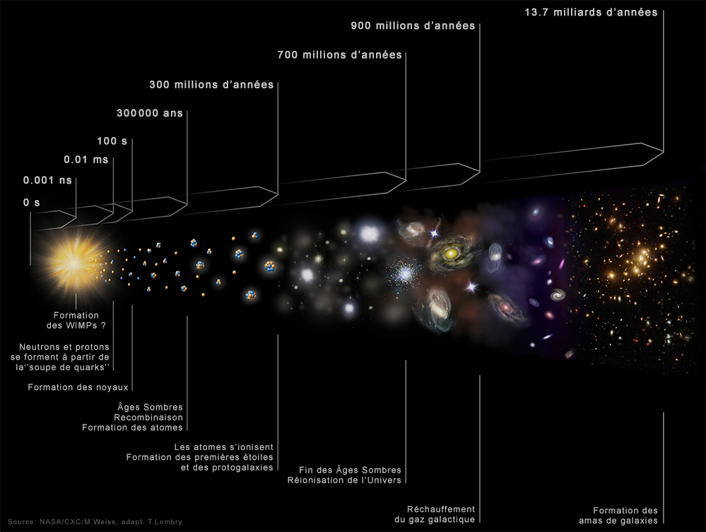
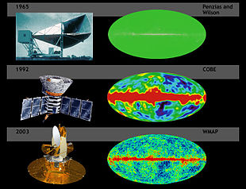
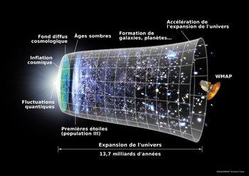

Le Big Bang (« Grand Boum ») est un modèle cosmologique utilisé par les scientifiques pour décrire l'origine et l'évolution de l'Univers. Il a été initialement proposé en 1927 par le chanoine catholique belge Georges Lemaître, qui décrivait dans les grandes lignes l’expansion de l’Univers, avant que celle-ci soit mise en évidence par l'astronome américain Edwin Hubble en 1929.
De façon générale, le terme « Big Bang » est associé à toutes les théories qui décrivent notre Univers comme issu d'une dilatation rapide qui fait penser (abusivement) à une explosion, et est également le nom associé à cette époque dense et chaude qu’a connue l’Univers il y a 13,8 milliards d’années sans que cela préjuge de l’existence d’un « instant initial » ou d’un commencement à son histoire.
Le concept général du Big Bang, à savoir que l’Univers est en expansion et a été plus dense et plus chaud par le passé, doit sans doute être attribué au Russe Alexandre Friedmann , qui l'avait proposé en 1922, cinq ans avant Lemaître. Son assise ne fut cependant établie qu’en 1965 avec la découverte du fond diffus cosmologique, l'« éclat disparu de la formation des mondes », selon les termes de Georges Lemaître, qui attesta de façon définitive la réalité de l’époque dense et chaude de l’Univers primordial. Albert Einstein, en mettant au point la relativité générale, aurait pu déduire l'expansion de l'Univers, mais a préféré modifier ses équations en y ajoutant sa constante cosmologique, car il était persuadé que l'Univers devait être statique.
|  | |

La découverte de la relativité générale par Albert Einstein en 1915 marque le début de la cosmologie moderne, où il devient possible de décrire l’Univers dans son ensemble comme un système physique, son évolution à grande échelle étant décrite par la relativité générale. Einstein est d’ailleurs le premier à utiliser sa théorie fraîchement découverte, tout en y ajoutant un terme supplémentaire, la constante cosmologique, pour proposer une solution issue de la relativité générale décrivant l’espace dans son ensemble, appelée univers d’Einstein.
Ce modèle introduit un concept extrêmement audacieux pour l’époque, le principe cosmologique, qui stipule que l’Homme n’occupe pas de position privilégiée dans l’Univers, ce qu’Einstein traduit par le fait que l’Univers soit homogène et isotrope, c’est-à-dire semblable à lui-même quels que soient le lieu et la direction dans laquelle on regarde. Cette hypothèse était relativement hardie, car, à l’époque, aucune observation concluante ne permettait d’affirmer l’existence d’objets extérieurs à la Voie lactée, bien que le débat sur cette question existe dès cette époque (par la suite appelé le Grand Débat).
Au principe cosmologique, Einstein ajoute implicitement une autre hypothèse qui paraît aujourd’hui nettement moins justifiée, celle que l’Univers est statique, c’est-à-dire n’évolue pas avec le temps. C’est cet ensemble qui le conduit à modifier sa formulation initiale en ajoutant à ses équations le terme de constante cosmologique. L’avenir lui donne tort, car dans les années 1920, Edwin Hubble découvre la nature extragalactique de certaines « nébuleuses » (aujourd’hui appelées galaxies), puis leur éloignement de la Galaxie avec une vitesse proportionnelle à leur distance : c’est la loi de Hubble. Dès lors, plus rien ne justifie l’hypothèse d’un Univers statique proposée par Einstein.
Avant même la découverte de Hubble, plusieurs physiciens, dont Willem de Sitter, Georges Lemaître et Alexandre Friedmann, découvrent d’autres solutions de la relativité générale décrivant un Univers en expansion. Leurs modèles sont alors immédiatement acceptés dès la découverte de l’expansion de l’Univers. Ils décrivent ainsi un Univers en expansion depuis plusieurs milliards d’années. Par le passé, celui-ci était donc plus dense et plus chaud.
Dans un premier temps, c’est cette seconde hypothèse qui a été la plus populaire, bien que le phénomène de création de matière ne soit pas motivé par des considérations physiques. L’une des raisons de ce succès est que dans ce modèle, appelé théorie de l’état stationnaire, l’univers est éternel. Il ne peut donc y avoir de conflit entre l’âge de celui-ci et l'âge d’un objet céleste quelconque. À l’inverse, dans l’hypothèse du Big Bang, l’Univers a un âge fini, que l’on déduit directement de son taux d’expansion (voir équations de Friedmann). Dans les années 1940, le taux d’expansion de l’Univers était très largement surestimé, ce qui conduisait à une importante sous-estimation de l’âge de l’Univers.
Deux preuves observationnelles décisives ont donné raison aux modèles de Big Bang : il s’agit de la détection du fond diffus cosmologique, rayonnement de basse énergie (domaine micro-onde) vestige de l’époque chaude de l’histoire de l’univers, et la mesure de l’abondance des éléments légers, c’est-à-dire des abondances relatives de différents isotopes de l’hydrogène, de l’hélium et du lithium qui se sont formés pendant la phase chaude primordiale.
Ces deux observations remontent au début de la seconde moitié du xxe siècle, et ont assis le Big Bang comme le modèle décrivant l’univers observable. Outre la cohérence quasi parfaite du modèle avec tout un autre ensemble d’observations cosmologiques effectuées depuis, d’autres preuves relativement directes sont venues s’ajouter : l’observation de l’évolution des populations galactiques, et la mesure du refroidissement du fond diffus cosmologique depuis plusieurs milliards d’années.
|
L’expansion induit naturellement que l’Univers a été plus dense par le passé. À l’instar d’un gaz qui s’échauffe quand on le comprime, l’Univers devait aussi être plus chaud par le passé. Selon l’étude de George Gamow (entre autres), l’Univers doit être empli d'un rayonnement qui perd de l’énergie du fait de l’expansion, selon un processus semblable à celui du décalage vers le rouge du rayonnement des objets astrophysiques distants. Gamow réalise en effet que les fortes densités de l’Univers primordial doivent avoir permis l’instauration d’un équilibre thermique entre les atomes, et par suite l’existence d'un rayonnement émis par ceux-ci. Ce rayonnement devait être d’autant plus intense que l'Univers était dense, et devait donc encore exister aujourd’hui, bien que considérablement moins intense. Gamow fut le premier (avec Ralph Alpher et Robert C. Herman) à réaliser que la température actuelle de ce rayonnement pouvait être calculée à partir de la connaissance de l’âge de l'Univers, la densité de matière, et l'abondance d’hélium. Ce rayonnement est appelé aujourd’hui fond diffus cosmologique, ou parfois rayonnement fossile. Il correspond à un rayonnement de corps noir à basse température (2,7 kelvins*), conformément aux prédictions de Gamow. Bien que correspondant à un rayonnement à basse température et peu énergétique, le fond diffus cosmologique n’en demeure pas moins la plus grande forme d’énergie électromagnétique de l’Univers : près de 96 % de l’énergie existant sous forme de photons est dans le rayonnement fossile, les 4 % restants résultant du rayonnement des étoiles (dans le domaine visible) et du gaz froid dans les galaxies (en infrarouge). Ces deux autres sources émettent des photons certes plus énergétiques, mais nettement moins nombreux. |
 |
Un Kelvin:-273.15 °C / 2.7 Kelvin: -270.45 °C
Le modèle du Big Bang présuppose que l’Univers ait été par le passé dans un état bien plus homogène qu’aujourd’hui. La preuve en est apportée par l’observation du fond diffus cosmologique dont le rayonnement est extraordinairement isotrope : les écarts de température ne varient guère plus d’un cent-millième de degré selon la direction d’observation. Il est donc supposé que les structures astrophysiques (galaxies, amas de galaxies) n’existaient pas à l’époque du Big Bang mais se sont peu à peu formées. Le processus à l’origine de leur formation est d’ailleurs connu depuis les travaux de James Jeans en 1902 : c’est l’instabilité gravitationnelle.
Le Big Bang prédit donc que les galaxies que nous observons se sont formées quelque temps après le Big Bang, et d’une manière générale que les galaxies du passé ne ressemblaient pas exactement à celles que l’on observe dans notre voisinage. Comme la lumière voyage à une vitesse finie, il suffit de regarder des objets lointains pour voir à quoi ressemblait l’univers par le passé.
Toutes ces observations sont relativement délicates à effectuer, en grande partie car les galaxies lointaines sont peu lumineuses et nécessitent des moyens d’observation très performants pour être bien observées. L’étude des toutes premières générations d’étoiles et de galaxies demeure un des enjeux majeurs de la recherche astronomique du début du XXIe siècle.
Du fait de l’expansion, l’Univers était par le passé plus dense et plus chaud. La chronologie du Big Bang revient essentiellement à déterminer à rebours l’état de l’Univers à mesure que sa densité et sa température augmentent dans le passé.
|
L’Univers est à l’heure actuelle extrêmement peu dense (quelques atomes par mètre cube, voir l’article densité critique) et froid (2,73 kelvins, soit −271 °C). En effet, s’il existe des objets astrophysiques très chauds (les étoiles), le rayonnement ambiant dans lequel baigne l’Univers est très faible. Cela provient du fait que la densité d’étoiles est extrêmement faible dans l’Univers : la distance moyenne d’un point quelconque de l’univers à l’étoile la plus proche est immense. L’observation astronomique nous apprend de plus que les étoiles ont existé très tôt dans l’histoire de l’Univers : moins d’un milliard d’années après le Big Bang, étoiles et galaxies existaient déjà en nombre. Cependant, à des époques encore plus reculées elles n’existaient pas encore. Si tel avait été le cas, le fond diffus cosmologique porterait les traces de leur présence.  |
380 000 ans après le Big Bang, alors que l’Univers est mille fois plus chaud et un milliard de fois plus dense qu’aujourd’hui, les étoiles et les galaxies n’existaient pas encore. Ce moment marque l’époque où l’Univers est devenu suffisamment peu dense pour que la lumière puisse s’y propager, essentiellement grâce au fait que le principal obstacle à sa propagation était la présence d’électrons libres. Lors de son refroidissement, l’Univers voit les électrons libres se combiner aux noyaux atomiques pour former les atomes. Cette époque porte pour cette raison le nom de recombinaison. Comme elle correspond aussi au moment où l’Univers a permis la propagation de la lumière, on parle aussi de découplage entre matière et rayonnement. La lueur du fond diffus cosmologique a donc pu se propager jusqu’à nous depuis cette époque
Moins de 380 000 ans après le Big Bang, l’Univers est composé d’un plasma d’électrons et de noyaux atomiques. Quand la température est suffisamment élevée, les noyaux atomiques eux-mêmes ne peuvent exister. On est alors en présence d’un mélange de protons, de neutrons et d’électrons. Dans les conditions qui règnent dans l’Univers primordial, ce n’est que lorsque sa température descend en dessous de 0,1 MeV (soit environ un milliard de degrés) que les nucléons peuvent se combiner pour former des noyaux atomiques. Il n’est cependant pas possible de fabriquer ainsi des noyaux atomiques lourds plus gros que le lithium. Ainsi, seuls les noyaux d’hydrogène, d’hélium et de lithium sont produits lors de cette phase qui commence environ une seconde après le Big Bang et qui dure environ trois minutes.
0,1 MeV (Environ un milliard de degrés)
Peu avant la nucléosynthèse primordiale (qui débute à 0,1 MeV), la température de l’Univers dépasse 0,5 MeV (cinq milliards de degrés), correspondant à l’énergie de masse des électrons. Au-delà de cette température, interactions entre électrons et photons peuvent spontanément créer des paires d’électron-positrons. Ces paires s’annihilent spontanément mais sont sans cesse recréées tant que la température dépasse le seuil de 0,5 MeV. Dès qu'elle descend en dessous de celui-ci, la quasi-totalité des paires s’annihilent en photons, laissant place au très léger excès d’électrons issus de la baryogenèse (voir ci-dessous).
0,5 MeV (Environ cinq milliards de degrés)
S'annihilent : Anéantir un ensemble abstrait, le détruire, le ruiner complètement
Peu avant cette époque, la température est supérieure à 1 MeV (dix milliards de degrés), ce qui est suffisant pour qu’électrons, photons et neutrinos aient de nombreuses interactions. Ces trois espèces sont à l’équilibre thermique à des températures plus élevées. Quand l’Univers refroidit, électrons et photons continuent à interagir, mais plus les neutrinos, qui cessent également d’interagir entre eux. À l’instar du découplage mentionné plus haut qui concernait les photons, cette époque correspond à celle du découplage des neutrinos
Neutrinos : particule élémentaire du modèle standard de la physique des particules. C’est un fermion de spin ½, électriquement neutre. Il en existe trois saveurs : électronique, muonique et tauique.
La physique des particules repose sur l’idée générale, étayée par l’expérience, que les diverses particules élémentaires et interactions fondamentales ne sont que des aspects différents d’entités plus élémentaires (par exemple, l’électromagnétisme et la force nucléaire faible peuvent être décrits comme deux aspects d’une seule interaction, l’interaction électrofaible). Plus généralement, il est présumé que les lois de la physique et par la suite l’Univers dans son ensemble sont dans un état plus « symétrique » à plus haute température. On considère ainsi que par le passé, matière et antimatière existaient en quantités strictement identiques dans l’Univers. Les observations actuelles indiquent que l’antimatière est quasiment absente dans l’univers observable
La présence de matière est donc le signe qu’à un moment donné s’est formé un léger excès de matière par rapport à l’antimatière. Lors de l’évolution ultérieure de l’Univers, matière et antimatière se sont annihilées en quantités strictement égales, laissant derrière elles le très léger surplus de matière qui s’était formé. Comme la matière ordinaire est formée de particules appelées baryons, la phase où cet excès de matière s’est formé est appelée baryogenèse. Très peu de choses sont connues sur cette phase ou sur le processus qui s’est produit alors. Par exemple l’échelle de température où elle s’est produite varie, selon les modèles, de 103 à 1016 GeV (soit entre 1016 et 1029 kelvins…).
Baryon : Un baryon est, en physique des particules, une catégorie de particule composite (c’est-à-dire non élémentaire) formée de trois quarks, dont les représentants les plus connus sont le proton et le neutron.
Un nombre croissant d’indications suggère que les forces électromagnétiques, faible et forte ne sont que des aspects différents d’une seule et unique interaction. Celle-ci est en général appelée théorie grand unifiée (« GUT » en anglais, pour Grand Unified Theory), ou grande unification. On pense qu’elle se manifeste au-delà de températures de l’ordre de 1016 GeV (1029 kelvin). Il est donc probable que l’Univers ait connu une phase où la théorie grand unifiée était de mise. Cette phase pourrait être à l’origine de la baryogenèse, ainsi éventuellement que de la matière noire, dont la nature exacte reste inconnue.
Au-delà de la phase d’inflation, et plus généralement à des températures de l’ordre de la température de Planck, on entre dans le domaine où les théories physiques actuelles ne deviennent plus valables, car nécessitant un traitement de la relativité générale incluant les concepts de la mécanique quantique. Cette théorie de la gravité quantique, non découverte à ce jour mais qui sera peut-être issue de la théorie des cordes encore en développement, laisse à l’heure actuelle place à des spéculations nombreuses concernant l’Univers à cette époque dite ère de Planck.
Si vous voulez retourner en haut de la page, cliquez ici.